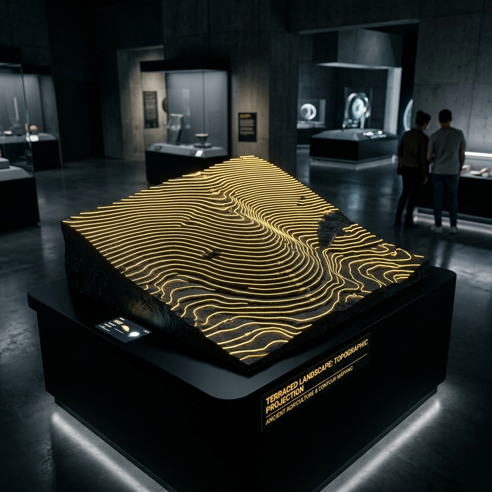
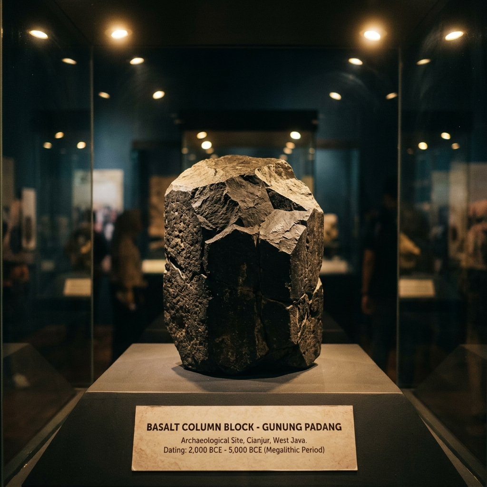
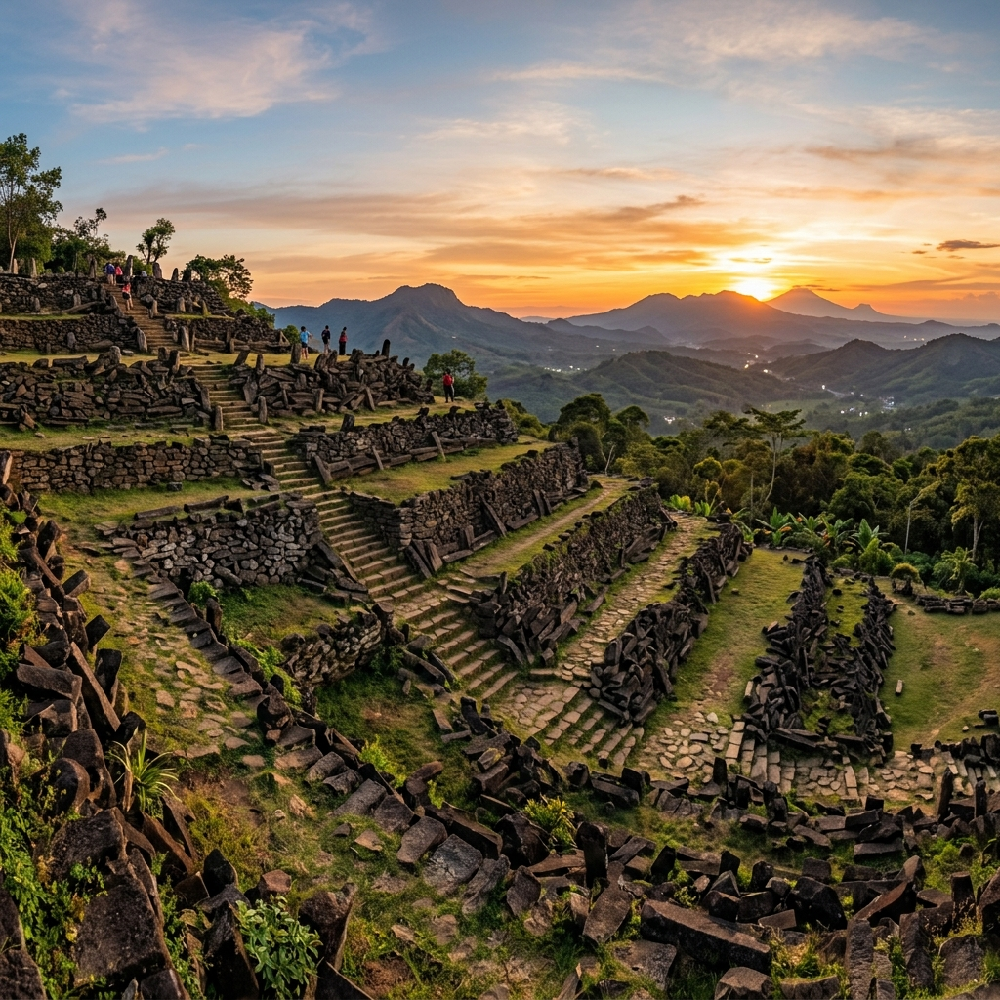
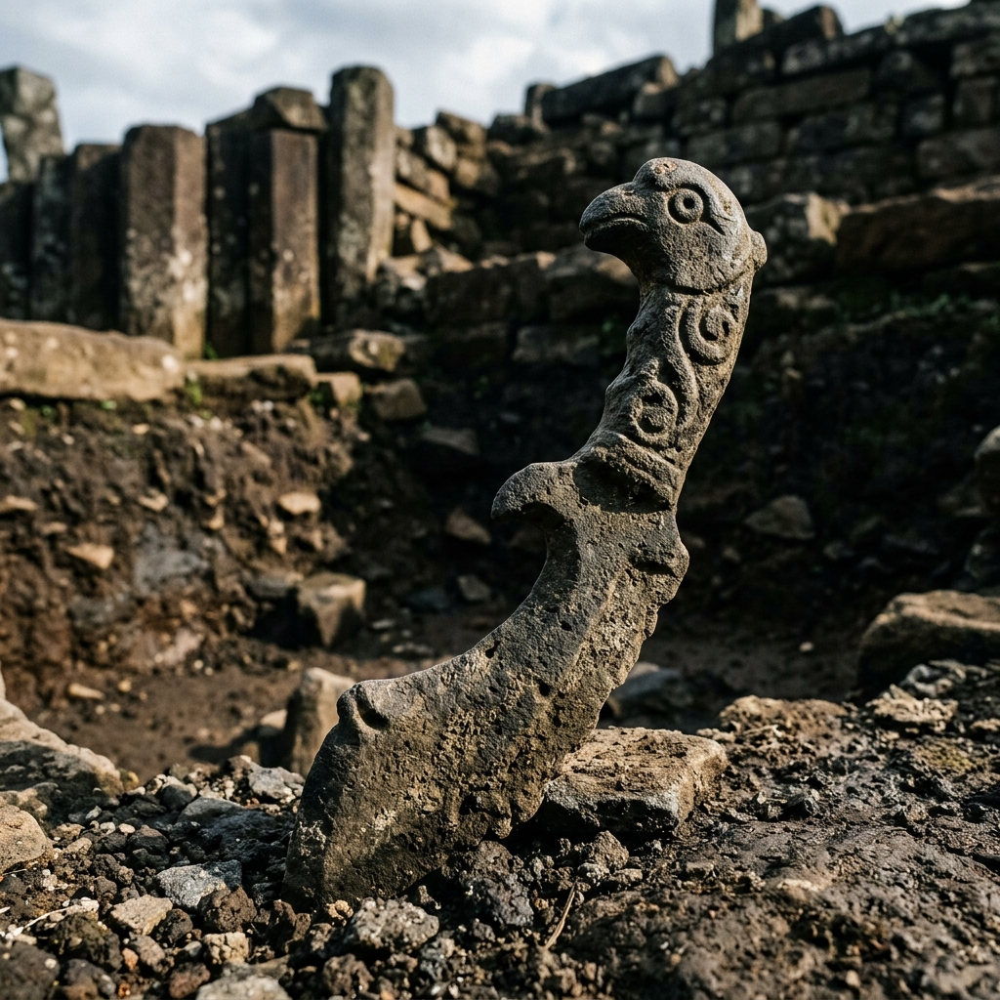
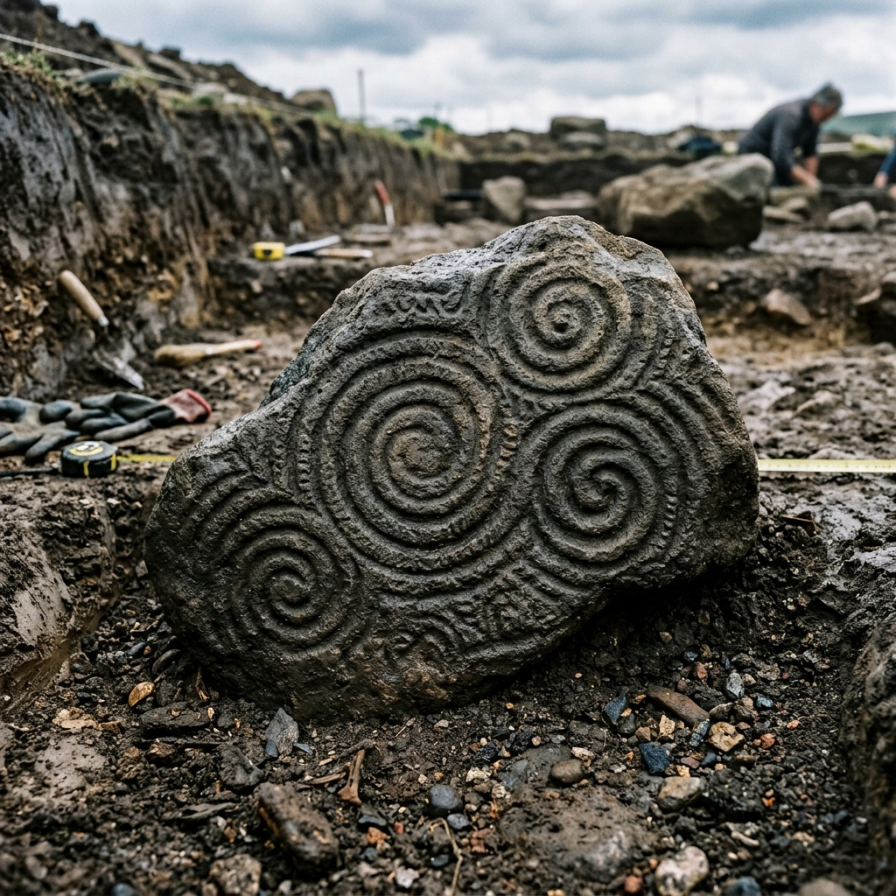

Virtual Heritage
Gunung Padang
Eksplorasi Situs Megalitikum tertua dan terbesar di Asia Tenggara melalui teknologi interaktif 3D, rekonstruksi visual, dan pemandu AI pintar.
Menyingkap Tabir Sejarah
Visualisasi sinematik struktur bawah tanah dan misteri di balik pembentukan punden berundak Gunung Padang.
Situs Megalitik Cianjur
Terletak di Karyamukti, Campaka, Kabupaten Cianjur, Jawa Barat. Gunung Padang adalah punden berundak megalitik terbesar di Asia Tenggara, didirikan pada ketinggian 885 meter di atas permukaan laut.
- Koordinat Geografis: 6°59′36″S 107°03′22″E
- Aksesibilitas: 4 jam berkendara dari Jakarta, dilanjutkan pendakian tangga utama
- Pengakuan: Ditetapkan sebagai Situs Cagar Budaya Peringkat Nasional

Situs Megalitik Terbesar
Eksplorasi interaktif lima teras utama Gunung Padang. Klik pada area teras untuk mempelajari sejarah dan misteri di baliknya.
Koleksi Artefak & Struktur

Columnar Jointing
Struktur batu alam berbentuk tiang segi lima yang digunakan sebagai fondasi utama di Gunung Padang.

Teras II (Pusat)
Wilayah dengan konsentrasi susunan batu paling padat yang diduga sebagai tempat pelaksanaan ritual astronomi purba.

Batu Kujang
Sebuah fragmen batu unik yang memiliki bentuk menyerupai senjata tradisional Jawa Barat (Kujang).
Peta Topografi 3D
Pemindaian digital terkini yang menunjukkan struktur bawah tanah Gunung Padang melalui georadar dan geolistrik.
Panorama Puncak
Visualisasi udara yang memperlihatkan orientasi astronomis Gunung Padang menghadap Gunung Gede di sebelah Utara.

Andesit Berukir
Salah satu balok andesit langka yang memiliki tanda goresan manual, dipercaya sebagai simbol budaya purbakala.
Jejak Waktu Peradaban
Nusantara
Menjelajahi ribuan tahun sejarah Gunung Padang melalui data-data penanggalan arkeologi, penelitian multi-disiplin, dan visualisasi masa depan.
Kronologi Situs
Telusuri fase-fase penting dari pembentukan megalitikum hingga upaya pelestarian modern.
Publikasi Ilmiah
Kumpulan jurnal riset terakreditasi dari peneliti terkemuka.
Analisis Penanggalan Karbon pada Lapisan Tanah Teras II
Rekonstruksi Arsitektur Struktur Megalithikum
Galeri Multimedia
Nalar Padang AI
OnlineLayanan Informasi
Warisan Budaya
Punya pertanyaan riset, rencana kunjungan kelompok akademis, atau laporan perlindungan cagar budaya? Sampaikan pesan Anda.
Email Resmi
info@gunungpadangvirtual.id
Telepon / BPCB DIY-Jabar
+62 (263) 1234-5678
Sekretariat Cagar Budaya
Balai Pelestarian Kebudayaan Wilayah IX, Jl. Diponegoro No. 10, Bandung, Jawa Barat